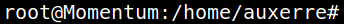
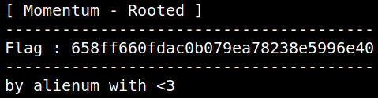

5.1 Getting the last flag
1. On your SSH connection use the “su” command.
auxerre@Momentum:~$su
Password:
"m0mentum-al1enum##"Output:

You've logged in as “root”.
2. Run the following command to see the flag.
root@Momentum:/home/auxerre#cd
root@Momentum:~#ls
root@Momentum:~# cat root.txt
root@Momentum:~#ls
root@Momentum:~# cat root.txt
Output:
